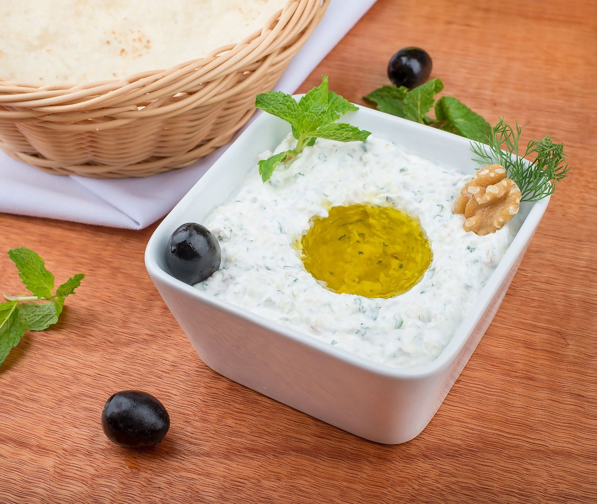

Mediterranean Diet May Boost Tiny Proteins That Protect The Heart And Brain

Key takeaways
- I used to think eating healthy meant choking down bland, dry chicken breasts and unseasoned steamed broccoli while staring longingly at my neighbor's pizza delivery.
- After years of crashing on strict meal plans, I learned that the Mediterranean Diet May Boost
- Track what feels sustainable and adjust gradually.
I used to think eating healthy meant choking down bland, dry chicken breasts and unseasoned steamed broccoli while staring longingly at my neighbor's pizza delivery. After years of crashing on strict meal plans, I learned that the Mediterranean Diet May Boost Tiny Proteins That Protect The Heart And Brain—and it actually tastes incredible.
These tiny circulating signaling molecules, often called apolipoproteins or neuroprotective peptides, act like microscopic repair crews throughout your vascular system. When you feed your body rich polyphenols and monounsaturated fats, you activate biological pathways that preserve cognitive function and keep your arteries supple.
Let us clear up a massive misconception about what eating this way actually looks like in everyday life.
To keep your biological cardiovascular shields operating at peak performance, check out this related healthy tip for easy morning meal swaps.
When I started swapping vegetable oil for cold-pressed extra virgin olive oil, I was shocked at how quickly my mid-afternoon brain fog began to lift. Emerging clinical studies suggest the Mediterranean Diet May Boost Tiny Proteins That Protect The Heart And Brain by down-regulating systemic vascular inflammation and bolstering high-density lipoprotein functions.
You do not need to overhaul your entire pantry tonight to start benefiting from this cellular defense system. Incorporating dark leafy greens, walnuts, and wild-caught fish creates a rich biochemical environment where protective transport proteins can thrive.
If you want to maintain momentum without feeling overwhelmed, read our another practical guide on stress-free meal prep strategy.
The 2-Minute Win
Drizzle one tablespoon of unheated extra virgin olive oil over your lunch or dinner today. This single action provides a rapid dose of oleocanthal and hydroxytyrosol to support vital cardiac proteins instantly.
I always keep a bag of walnuts on my kitchen counter so I can grab a quick handful whenever mid-day hunger strikes. Over time, these small consistent additions accumulate, proving that the Mediterranean Diet May Boost Tiny Proteins That Protect The Heart And Brain without requiring rigid meal counting or miserable restrictions.
For more strategies on staying consistent with dense nutritional habits, review this similar wellness insight.
Pro-Tip: Buy frozen wild blueberries instead of fresh ones. They are frozen at peak ripeness, preserving fragile antioxidant compounds, cost significantly less, and will not spoil in your fridge crisper drawer.
Consistency will always trump short-term perfection when you are trying to alter long-term health biomarkers. Try to stay consistent with this habit by linking your healthy fat intake directly to an existing daily routine, like breakfast coffee.
Take time to explore more longevity guides as you continue building a practical, enjoyable lifestyle that keeps your mind sharp and your heart resilient for decades to come.
This article is for educational purposes only and does not constitute formal medical advice.
Recommended Reading
- Top Longevity Foods for Optimal Brain Health & Cognitive Function: My Secret Weapons
- Busy Pro's Guide to Quick, Healthy Eating
- The Ultimate Guide to Daily Hydration: Boost Energy & Wellness
More in longevity
 longevity
longevityScientists Discover A Surprising Link Between Vitamin C And Cancer Survival
Scientists Discover A Surprising Link Between Vitamin C And Cancer Survival. Learn how high-dose IV therapies and gut he
Read article → longevity
longevityStop Overcomplicating: Scientists Find 10 Different Diets Linked To Slower Aging
Scientists find 10 different diets linked to slower aging. Learn how simple food choices and restorative sleep can trans
Read article →Related posts
longevityScientists Discover A Surprising Link Between Vitamin C And Cancer Survival
Scientists Discover A Surprising Link Between Vitamin C And Cancer Survival. Learn how high-dose IV therapies and gut he
Read article →longevityStop Overcomplicating: Scientists Find 10 Different Diets Linked To Slower Aging
Scientists find 10 different diets linked to slower aging. Learn how simple food choices and restorative sleep can trans
Read article → longevity
longevityVitamin D Drug May Help Crack Pancreatic Cancer’S Protective Shield
Discover how a Vitamin D Drug May Help Crack Pancreatic Cancer’S Protective Shield and what modern research means for pr
Read article →